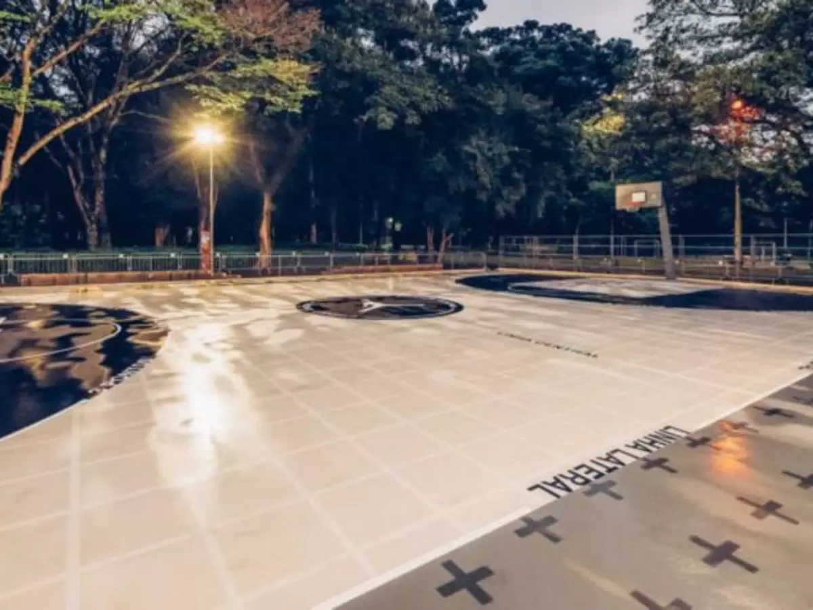
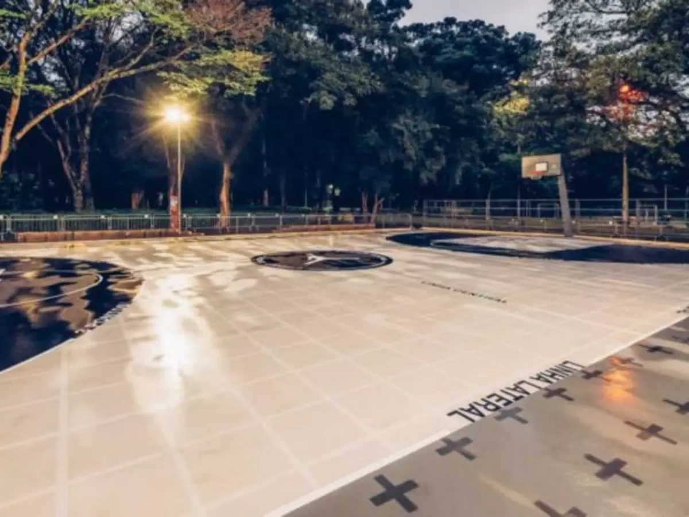

Shoot Life
Shoot Life

A prática de basquetebol pode trazer muitos benefícios para a saúde, tanto física como mental:
Física🏋️♂️
O basquete é uma atividade completa que trabalha diversos grupos musculares, incluindo braços, pernas, costas e abdômen, contribuindo para o fortalecimento e a tonificação do corpo. A prática regular desse esporte ajuda a melhorar a coordenação motora, essencial para executar movimentos como dribles, passes e arremessos. Além disso, promove o desenvolvimento da flexibilidade, força, velocidade e resistência, características fundamentais para o desempenho físico. O basquete também tem um impacto positivo na saúde cardiovascular e na aptidão cardiorrespiratória, devido ao esforço contínuo e à alta intensidade das partidas, que envolvem corridas, saltos e mudanças rápidas de direção. Esses benefícios tornam o basquete uma excelente opção para quem busca uma vida mais saudável e ativa.
Mental🧠
O basquete ajuda a reduzir o estresse e a ansiedade, pois a prática libera endorfinas, hormônios que promovem o bem-estar. Além disso, a necessidade de tomar decisões rápidas durante o jogo estimula o raciocínio lógico e estratégico, contribuindo para o desenvolvimento cognitivo. A prática regular do esporte também melhora a concentração e a consciência, ajudando os jogadores a focar no momento presente e a desenvolver a capacidade de atenção plena. O basquete promove a socialização e o trabalho em equipe, fortalecendo habilidades interpessoais e ajudando a construir relacionamentos saudáveis, o que é fundamental para a saúde mental. Essa combinação de benefícios faz do basquete uma excelente ferramenta para melhorar tanto o bem-estar emocional quanto a resiliência psicológica.
Social🗣
O basquete é um esporte coletivo que promove o trabalho em equipe, a comunicação e o desenvolvimento de habilidades sociais. Ele incentiva a cooperação entre os jogadores, reforçando a importância de atuar em conjunto para alcançar objetivos comuns. A prática do basquete também ajuda a desenvolver a empatia e o respeito, pois os jogadores aprendem a lidar com diferentes personalidades e a valorizar as contribuições de cada membro da equipe. Além disso, o esporte cria oportunidades para a socialização e a formação de amizades, tanto dentro quanto fora das quadras. Participar de equipes ou eventos relacionados ao basquete pode ajudar a construir uma rede de apoio social, fortalecendo o senso de pertencimento e comunidade. Esse impacto social positivo é especialmente importante para crianças e jovens, que aprendem valores como disciplina, comprometimento e esportividade.
+ benefícios✅
O basquete é uma atividade que também traz benefícios importantes para a saúde física e bem-estar. Ele ajuda a prevenir problemas nas articulações e nos ossos, já que os movimentos constantes de saltos e mudanças rápidas de direção estimulam o fortalecimento ósseo e a flexibilidade nas articulações. Isso pode ajudar a evitar o enrijecimento das articulações, que ocorre com o envelhecimento ou com a falta de atividade física, além de prevenir problemas como a osteoporose.
Além disso, o basquete é uma excelente forma de emagrecimento saudável, pois é um esporte de alta intensidade que queima muitas calorias. A prática regular contribui para a redução de gordura corporal, ajudando na manutenção de um peso saudável. A combinação de exercícios aeróbicos e de força melhora a composição corporal, tornando o corpo mais forte e mais leve.
Outro benefício do basquete é que ele melhora a saúde geral do sistema musculoesquelético, aumentando a resistência muscular e a força dos ossos. Isso ajuda a manter a mobilidade por mais tempo, reduzindo o risco de lesões e promovendo uma maior qualidade de vida à medida que envelhecemos.
⚠️⚠️
No entanto, o basquete pode causar lesões, como entorses de tornozelo, entorses dos dedos das mãos, estiramentos na coxa ou perna e tendinites/apofisites. Para prevenir lesões, é possível seguir um programa de mudança comportamental que inclua informações sobre saúde, fair play e um guia de aquecimento.
Esportes são um bom exemplo de lazer em nossas vidas, e o basquete não é diferente. Este esporte oferece uma combinação perfeita de diversão e atividade física, promovendo interação social enquanto se pratica. Jogar basquete é uma maneira dinâmica de se divertir, seja em um jogo descontraído entre amigos ou participando de atividades mais organizadas. A prática frequente do esporte ajuda a melhorar o condicionamento físico, ao mesmo tempo que proporciona momentos de descontração e amizade. Além disso, o basquete é acessível, pois pode ser jogado em quadras ao ar livre, tornando-se uma opção popular para quem busca lazer saudável e envolvente.
No estado de são Paulo temos diversos locais para a prática desse Lazer na cidade de São Paulo.
Parque do Ibirapuera: Um dos locais mais famosos da cidade, com quadras bem conservadas.
 

Parque Villa-Lobos: Oferece quadras ao ar livre em meio a uma grande área verde.
Centro Esportivo e de Lazer Tietê: Um centro completo para a prática de basquete e outros esportes.
Sesc´s: Além da quadra de basquete, oferecem diversas atividades culturais e esportivas.
Parque da Juventude: Uma excelente opção na zona norte, com infraestrutura para basquete e outros esportes
.png)
A competitividade no basquete é um elemento essencial que define a essência do esporte, tanto em contextos profissionais quanto amadores. O basquete, sendo um esporte coletivo, exige esforço físico, habilidades técnicas e mentalidade estratégica, criando um ambiente desafiador onde jogadores buscam constantemente superar seus limites e o desempenho dos adversários.
Na prática, a competitividade promove o desenvolvimento de habilidades como a resiliência, a determinação e a capacidade de trabalhar sob pressão. Jogadores aprendem a tomar decisões rápidas, adaptando-se a diferentes cenários de jogo, enquanto trabalham em harmonia com seus companheiros de equipe para atingir objetivos comuns. Além disso, a competição saudável estimula a busca pela melhoria contínua, ajudando a fortalecer tanto o corpo quanto a mente.
O basquete competitivo também transcende as quadras, influenciando a vida pessoal dos atletas. A disciplina necessária para treinos e jogos, a gestão emocional em situações adversas e o espírito esportivo são lições valiosas aplicáveis a diversos aspectos da vida. Competir no basquete não é apenas sobre vencer, mas sobre aprender, crescer e desenvolver um respeito mútuo por colegas, adversários e pelo próprio esporte.
Esses valores fazem do basquete um esporte universalmente admirado, onde a competitividade saudável é o motor para o progresso e a inspiração.